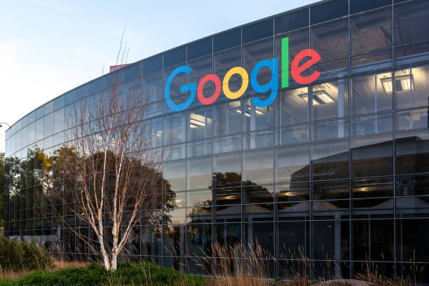

Welcome to Our Aura Tech Company
We provide top-notch IT services to support your business needs. Our team of experts is dedicated to delivering innovative solutions that drive success.



IT services and support companies maintain and protect a business's technology. Core services include Help Desk support, network security, cloud management, and data backup. Think of them like an in-house digital mechanic that fixes broken parts, stops hackers, and makes sure everything runs fast.
- Help Desk / End-User Support: first point of contact for solving simple problems like password resets, slow computers, and printer issues.
- Managed IT Services: Complete outsourcing of your tech needs. The company watches your systems 24 ÷ 7 to stop problems before they happen.
- Data Backup & Disaster Recovery: Secures information in remote storage X (the Cloud) so a company never loses its files if the main office loses power or gets a virus.
- Network Security: Protects a business from hackers, viruses, and other cyber threats.
- IT Consulting: Gives expert advice to business owners on what new software or hardware to buy to reach their goals.